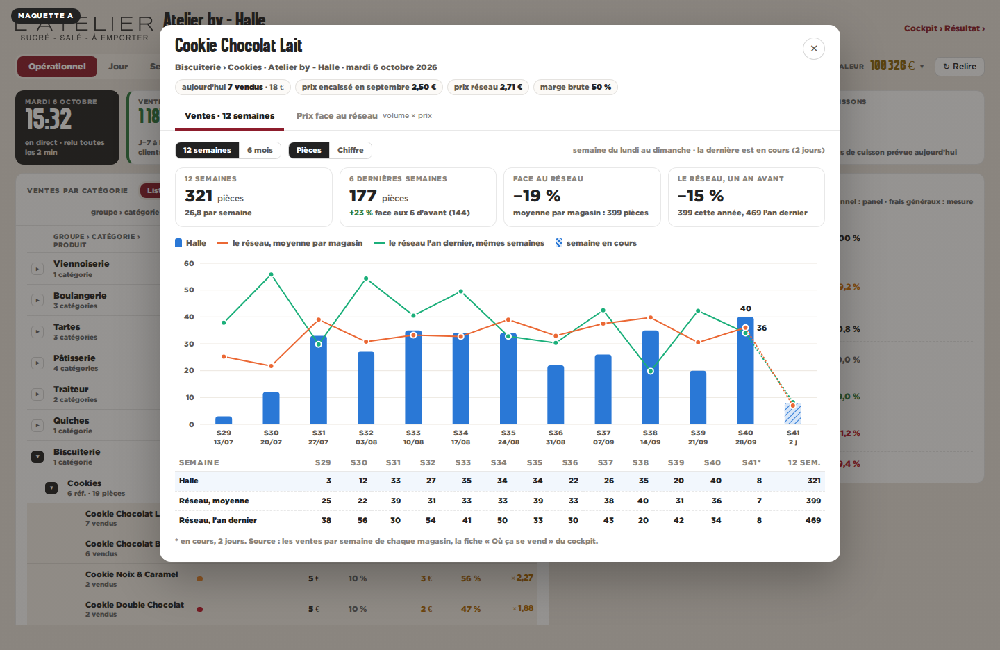
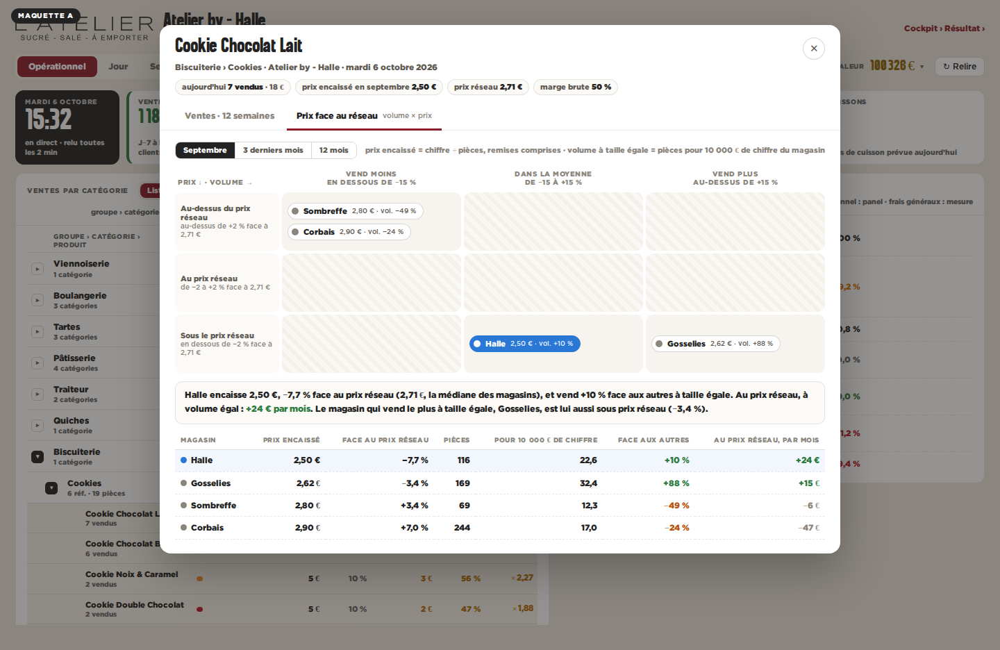
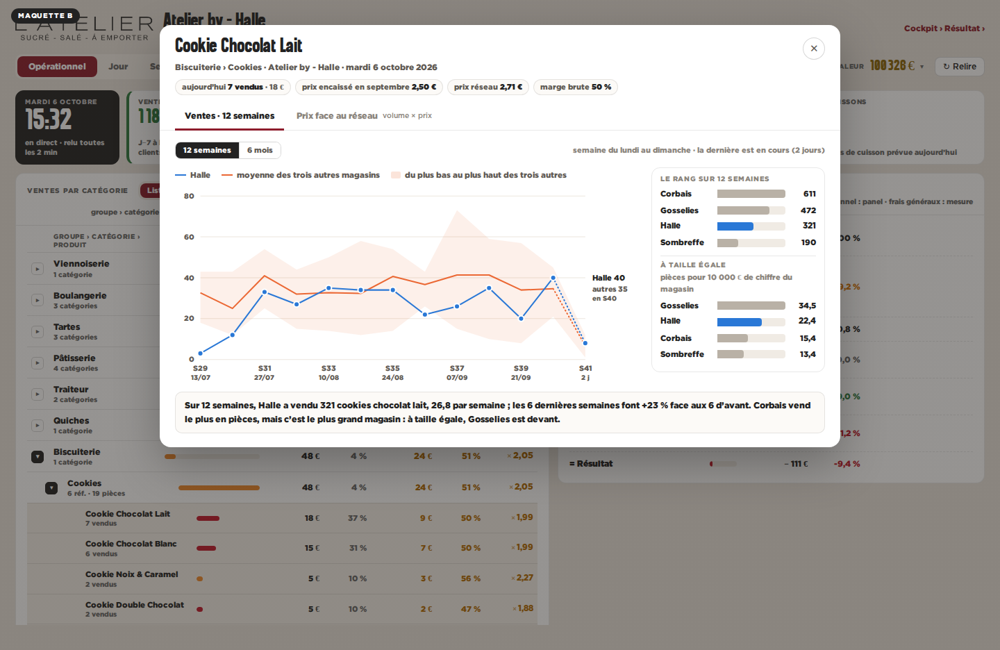
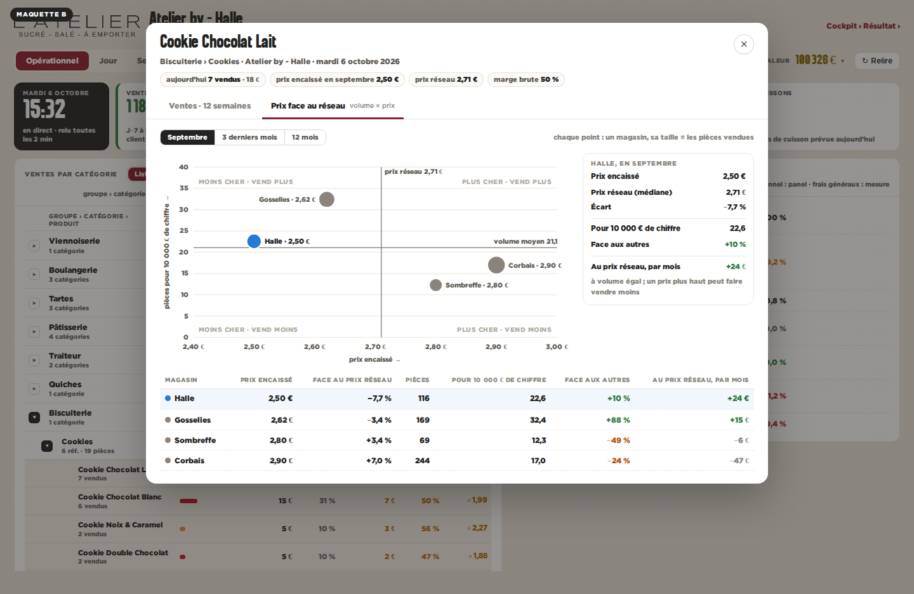

Onglet 1 : les 12 semaines de Halle en colonnes, la moyenne du réseau et le réseau l’an dernier en lignes, quatre chiffres clés et le tableau semaine par semaine. Onglet 2 : un tableau croisé 3 × 3, prix (sous, au, au-dessus du réseau) × volume à taille égale (moins, dans la moyenne, plus), chaque magasin dans sa case, puis le détail.


Onglet 1 : Halle en courbe face à la bande des trois autres magasins et à leur moyenne, et le rang du magasin sur 12 semaines, en pièces et à taille égale. Onglet 2 : un nuage prix × volume coupé en quatre par le prix réseau et le volume moyen, chaque magasin un point à sa vraie place.

